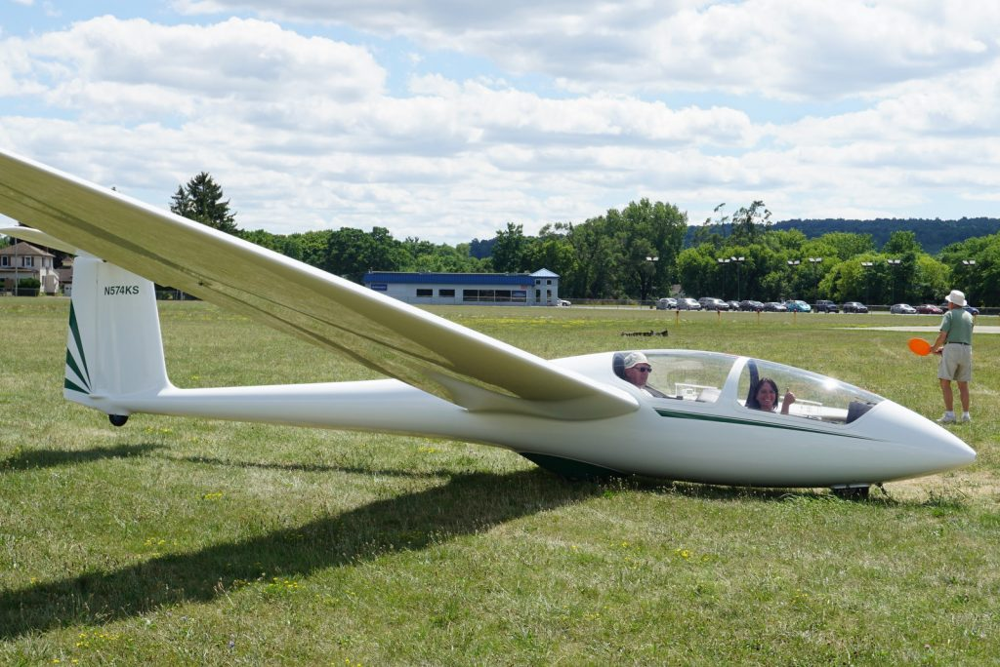

Two-seat trainer · N574Operating handbook ↗
Schleicher ASK 21
Fiberglass mid-wing trainer for all levels of instruction, cross-country flight, aerobatics, and spin training with approved tailweights.
Best glide34:1
Stall37 KIAS
Vne151 KIAS
Final49 KIAS + wind